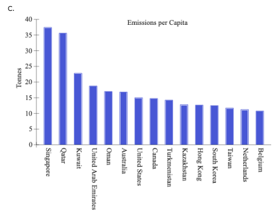
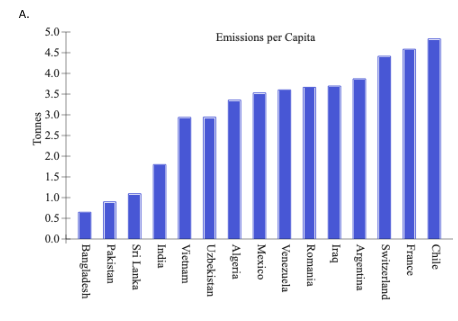
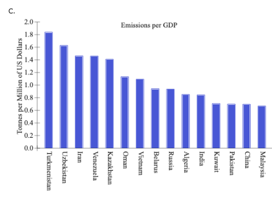
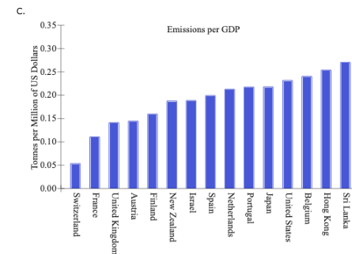

Section B: Chapter 2 Excel Assignments
Excel Activity: Carbon Dioxide Emissions II
The planet may be threatened by global warming/climate change, possibly caused by burning fossil fuels (petroleum, natural gas, and coal) that produces carbon dioxide (CO2). We recorded the 2019 emissions, population size (millions), and the gross domestic product (GDP in $billions) for each of the 46 countries. The unit of measurement of emissions is millions of tonnes. (A tonne is 1,000 kilograms and a kilogram is about 2.2 pounds.) The carbon emissions reflect only those through consumption of oil, gas, and coal for combustion related activities, and are based on "Default CO2 Emissions Factors for Combustion" listed by the Intergovernmental Panel on Climate Change (IPCC) in its Guidelines for National Greenhouse Gas Inventories (2006). The data has been collected in the Microsoft Excel file below. Download the spreadsheet and perform the required analysis to answer the questions below.
Spreadsheet file: The following exercise requires a computer and software for the data file (click here to download)
(a) Emissions per Capita — Top 15 Countries
Compute emissions per capita and construct a bar chart for the top 15 countries.

Correct Answer: Graph C
(a) Emissions per Capita — Bottom 15 Countries
Construct a bar chart for the bottom 15 countries based on emissions per capita.

Correct Answer: Graph A
(b) Emissions per GDP — Top 15 Countries
Calculate emissions per GDP for all countries and construct a bar chart for the top 15 countries.

Correct Answer: Graph C
(b) Emissions per GDP — Bottom 15 Countries
Construct a bar chart to display the emissions per GDP for the bottom 15 countries.

Correct Answer: Graph C
(c) Describe your findings for parts (a) and (b).
Singapore has the largest amount of emissions per capita, while Bangladesh has the smallest amount of emissions per capita.
Turkmenistan has the largest amount of emissions per GDP, while Switzerland has the smallest amount of emissions per GDP.